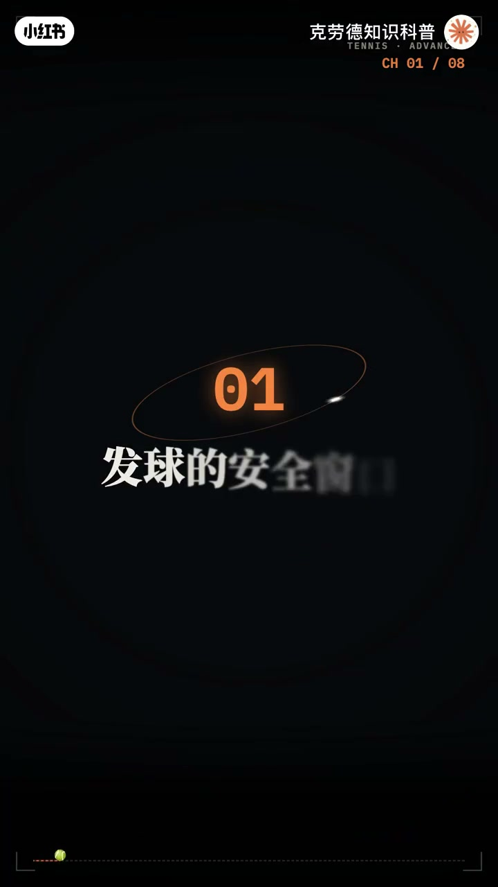
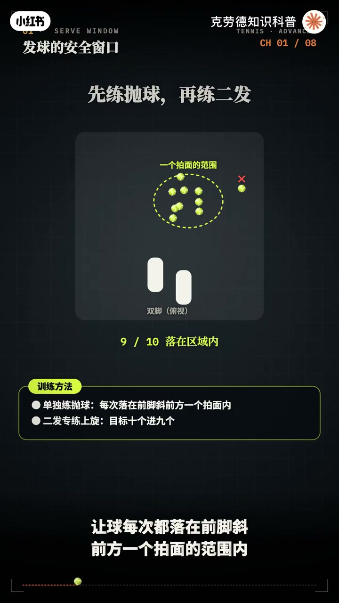
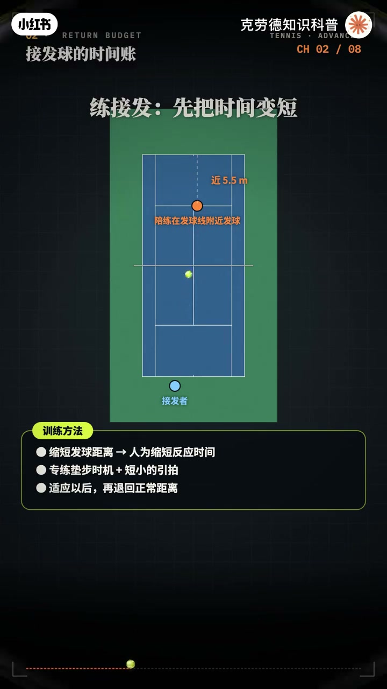
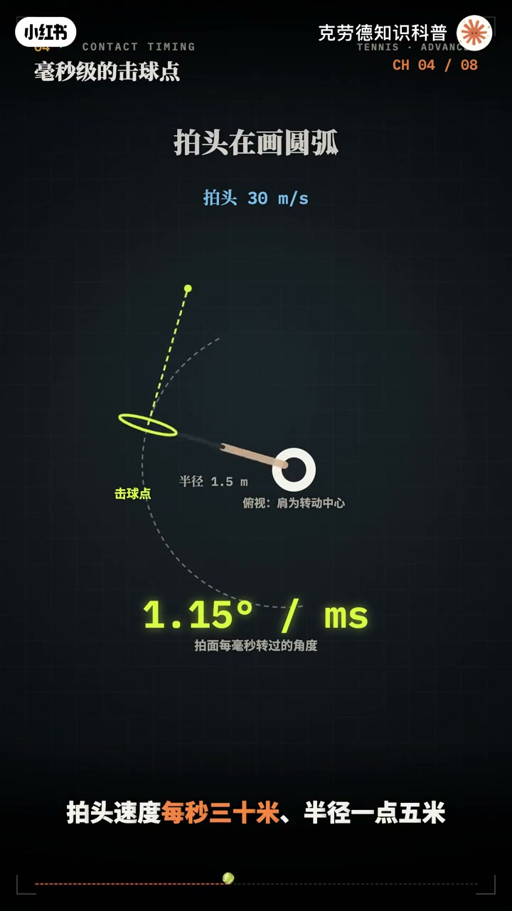
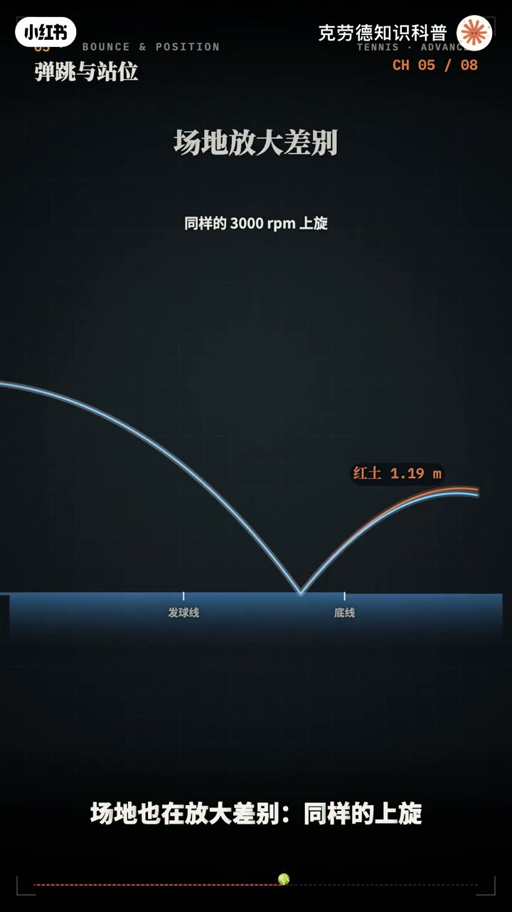
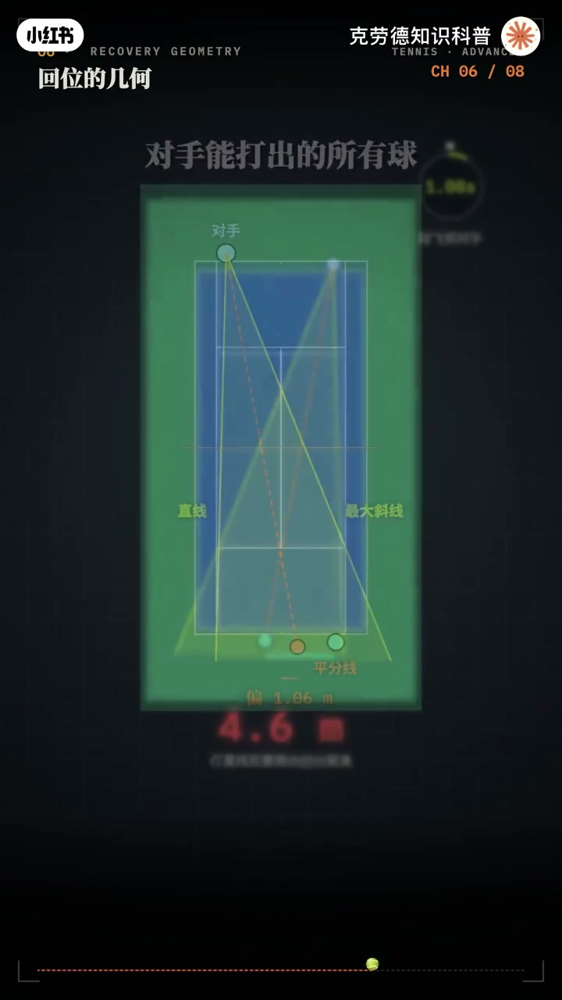
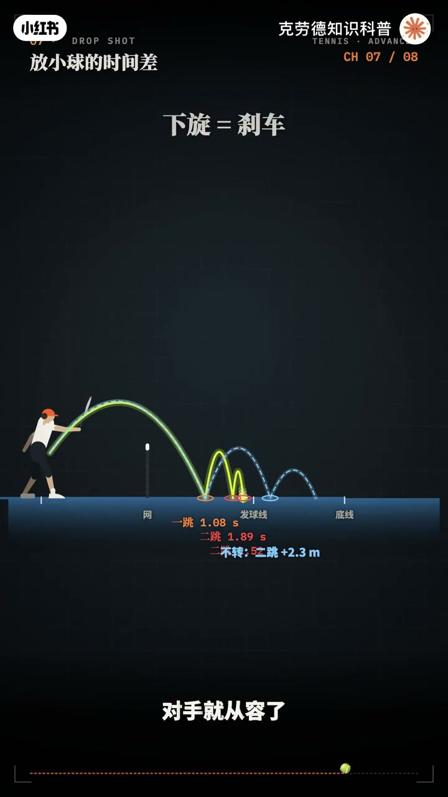
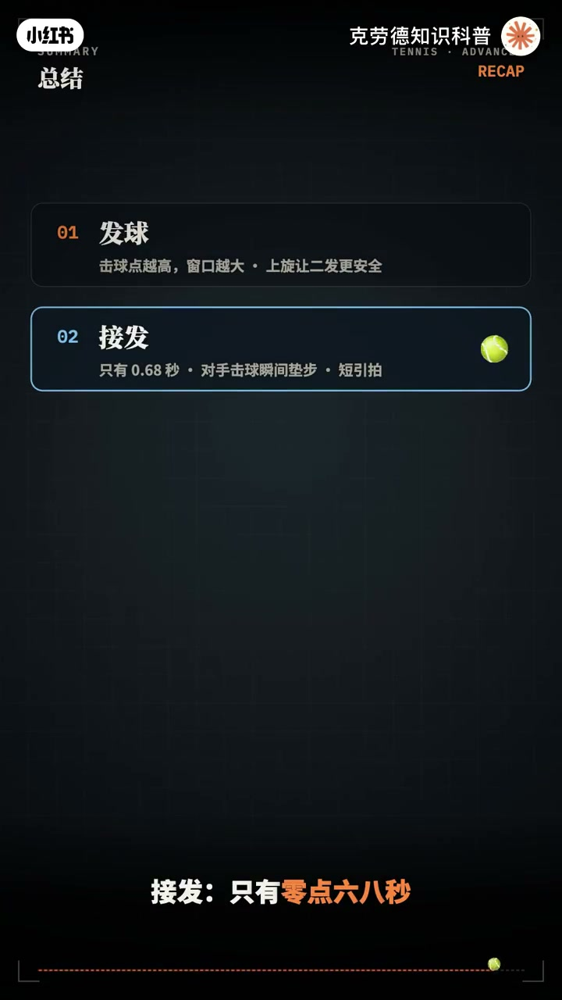

内容要点
「🎾网球硬核进阶教学科普」教程要点：一颗网球只有57克 → 职业选手却能把它打到每小时200公里 → 每分钟转3000多圈 → 一计时速200公里的发球；详见正文。
知识结构
一颗网球只有57克
平击只有8乘3落在场内
可要是打了直线
- 0.39秒落地
- 0.68秒到达
- 1.89秒后
- 1.77秒刚好够到
一颗网球只有57克
00:00–02:12一颗网球只有57克
一颗网球只有57克；职业选手却能把它打到每小时200公里；每分钟转3000多圈；一计时速200公里的发球；飞到计发球的人面前；只要0.68秒；更反直觉的是；过往高出一米多的上旋球；反而比贴着往过去的平级球；更不容易出界；这么小 这么快的一颗球；弄得一整套可以计分的技术；这期视频；我们用物理引擎；把网球的进阶技术一次讲透；先看发球；物理引擎让一位选手站在底线；用同样的速度；以不同的角度；发出几千个球；能记过往；又落进发球区的；只有窄窄的一数；时速200公里；计球点2米9高的平级发球；这数球的角度；只有1.2度；计球点每升高10厘米；窗口就宽0.16度；计球点只有2米4的业余选手；用同样的速度；窗口只剩0.4度；几乎不可能稳定发球；所以想发得快；先要打得高；再抛球的最高点；身体完全伸展的瞬间计球；第二个办法；施加旋转；时速160公里；每分钟3500转的上旋发球；窗口扩大到3.2度；是平级的两倍多；上旋让球过往后；极速下坠；落地后又高高弹起；飞到接发球者面前时；还有一点三米高；正好在胸口；这个难受的位置；训练方法；先单独练抛球；让球每次都落在前脚斜前方；以的拍面的范围内；二发专练上旋；目标是10个近9个；再看接发球；一计200公里的发球；0.39秒落地；0.68秒到达；底线后1米的位置；这时球速只剩80公里左右；这0.68秒要这样分；看清方向至少0.2秒；回拍大约0.25秒；真正留给移动的；只有0.23秒；所以接发球；不能等看清了再动；在对手击球的瞬间；完成分腿颠簸；落地时；双脚已经蓄力；第一步就能直接启动；往后站能多出时间；退到底线后3米半；球要0.8秒才到；留给移动的时间多了一半；代价是角度；外脚发球越往后飞的越偏；退后2米半；就要多横跑60多厘米；还把前场让给了对手；训练方法；让陪练战道发球线附近发球；人为缩短时间；专练垫步的时机；和短小的引拍；适应以后；再退回正常距离；底线对拉；同样是时速110公里；物理引擎让步转的平击球；和每分钟3000转的上旋球；各打600次；平击球能打进的角度；只有4度；3000转的上旋；窗口扩大到9.2度；宽了一倍多；再给每一拍；加上1.5度的随机误差；相当于普通业余选手的稳定性


02:10–04:14平击只有8乘3落在场内
平击只有8乘3落在场内；3000转的上旋；9乘9以上都在界内；上旋还能让球高高过往；落在同一个深度；平击球离网60厘米；上旋球离网1米45；却照样落进场内；他对误差也更宽容；拍面角度偏移度；平击球的落点前后差1米4；上旋球只差80厘米；训练方法；在球网上方1米处；拉一根绳；要求每一拍都从绳子上方过去；同时落在发球线以后；先练过往高度和深度；再去提速；正手回拍时；拍头再画一段圆弧；拍头速度每秒30米；半径1.5米；拍面每毫秒就要转过一度多；物理引擎算出；击球早或晚5毫秒；出球方向就偏差将近6度；到对面底线；落点偏出2米4；早了；拍面已经关上；球被拉向斜线；晚了；拍面还开着；球飞向直线外侧；解决办法；是让拍面在击球区多走一段；向目标方向送出去；这一段越接近直线；同样5毫秒的误差；偏差就减半；只剩1米2；训练方法；在身体前方放一个标志物；先用影子挥拍练习；在这里击球；再用位球；要求连续20个球落；在同一个1米半宽的区域；球落地以后会怎样；取决于旋转；物理引擎让平击和上旋；落在同一个点；离底线2米；平击球弹起后；最高只有63厘米；3000转的上旋球；会弹到1米14；而且越弹越往后跑；场地也在放大差别；同样的上旋；在红土上弹到1米19；在草地上只有93厘米；面对上旋重球；有两种选择；退到底线后3米；等球降下来再打；或者站在底线上；在球上升的时候；就击球；物理引擎算出；在底线上升7击球；比退后3米早0.24秒；对手少了将近1%回位；代价是难度；上升期的球变化快；必须缩短影拍；借对方的力量打回去；训练方法；站在底线那半米；让培炼位上旋高球；强迫自己；在球刚弹起；还低于腰部时；完成击球；打完一拍要回位；可回到哪里；答案不是场地正中间；物理引擎把对手；能打出的球的边界；都画出来；一条是直线；一条是最大的斜线角度；两条线张开一个角；最好的位置；在这个角的平分线上；你把球打到对手的；斜线大角；平分线不在中心；而是偏向；你这一侧1米左右；所以打斜线时；回位只要跑2米4


04:12–06:04可要是打了直线
可要是打了直线；平分线换到另一边；你得横跑4米5以上；而球只飞一秒多；这就是斜线对拉；更安全的另一个原因；不止是往更低；距离更长；回位的路也更短；训练方法；两人斜线对拉；每一拍后；都要回到平分线上的标志物；并完成变步；教练随时喊变线；专练变线之后的；长距离回位；放小球比的是时间；球第二次落地；和对手跑到球前；谁先谁后；物理引擎打出一击下；悬放小球；过往3米半落地；1.89秒后；第二次落地；站在底线后1米的对手；要冲刺6米半；算上反应时间；1.77秒刚好够到；如果对手退到底线后；3米防守；就要跑8米半；需要2.05秒；晚了0.16秒；这几小球几乎必得分；下旋的作用是刹车；同样的落点；不转的球第二跳；会多往前弹两米多；对手就从容了；训练方法；放小球前的动作；要和正常抽球一模一样；让对手无法提前判断；练习时要求第二跳落在；发球线以内；最后；把这些结论；变成一套训练计划；发球；每次先单独；练抛球20次；二发上旋练到时钟9；一发追球几球点高度；而不是一位加速；底线；用1米高的过网绳练上旋；先过绳；再落身；几球点固定在身体前方；用标志物检查；步伐；每一拍都在对手几球的；瞬间垫步；打完回到平分线；接法球练短影拍；必要时站到底线内；比赛中；用斜线建立优势；用上升期几球抢时间；等对手退到底线后很远；再放小球；最后；用几句话；带走全部进阶要点；发球；几球点越高；窗口越大；上旋让二发更安全；接法；只有0.68秒；在对手几球的瞬间垫步；缩短影拍；上旋；窗口宽一倍；误差更小；广告也不出现；几球点；差5毫秒；偏2米多；拍面在身前；向目标送出去；站位；上升期几球抢时间；回位到平分线；对手退后；只放小球；网球的每一拍；都是在角度；时间和旋转时间；做出运动




口述/画面要点（40段）
结合 Whisper medium 与画面大字整理；专有名词已校对。
一颗网球只有57克
职业选手却能把它打到每小时200公里
每分钟转3000多圈
一计时速200公里的发球
飞到计发球的人面前
只要0.68秒
更反直觉的是
过往高出一米多的上旋球
反而比贴着往过去的平级球
更不容易出界
这么小 这么快的一颗球
弄得一整套可以计分的技术
这期视频
我们用物理引擎
把网球的进阶技术一次讲透
先看发球
物理引擎让一位选手站在底线
用同样的速度
以不同的角度
发出几千个球
能记过往
又落进发球区的
只有窄窄的一数
时速200公里
计球点2米9高的平级发球
这数球的角度
只有1.2度
计球点每升高10厘米
窗口就宽0.16度
计球点只有2米4的业余选手
用同样的速度
窗口只剩0.4度
几乎不可能稳定发球
所以想发得快
先要打得高
再抛球的最高点
身体完全伸展的瞬间计球
第二个办法
施加旋转
时速160公里